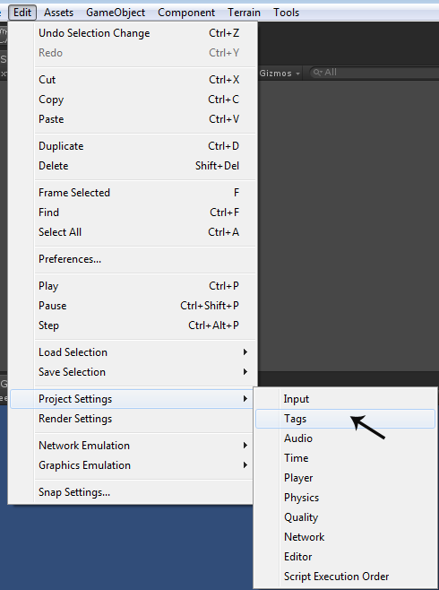
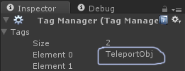
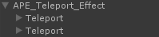
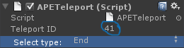
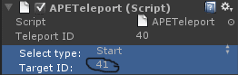

| Documentation v 0.5 |
| Navigation: Table of Content -> Effects configuration -> Teleports Effects |
|
Teleports configuration: Attention: For using this effect, you will need add tag "TeleportObj" in you project.   For configure of this effect, you need to select "APE_Teleport_Effect" in the Hierarchy. Then click on the territory(Static object, Terrain) in the Scene. And repeat. Now you have 2 teleports on a scene.  Now select the second teleport and change "Select type" on "End" in the Inspector, remember TeleportID.  Then select the first teleport and change "TargetID" on "TeleportID" in the second teleport.  Back |